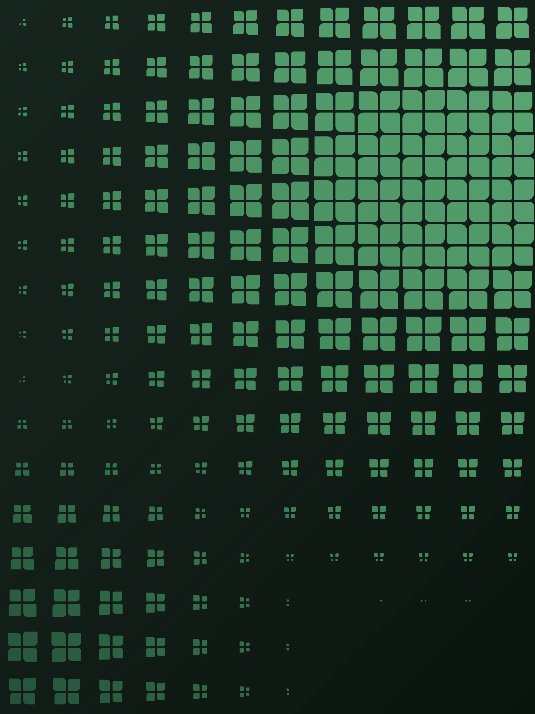
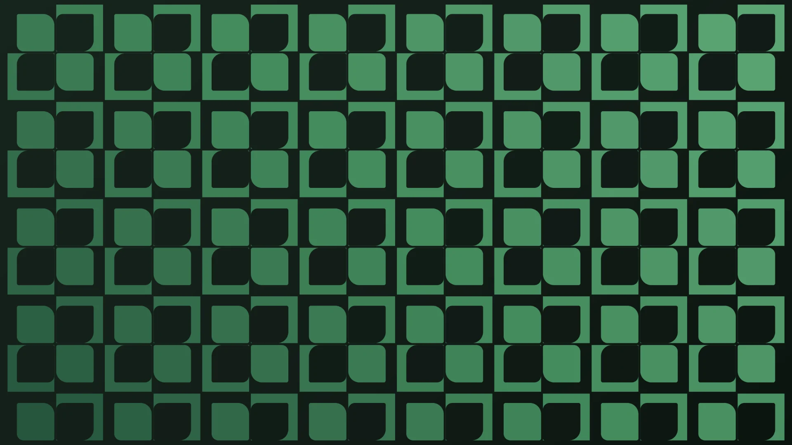
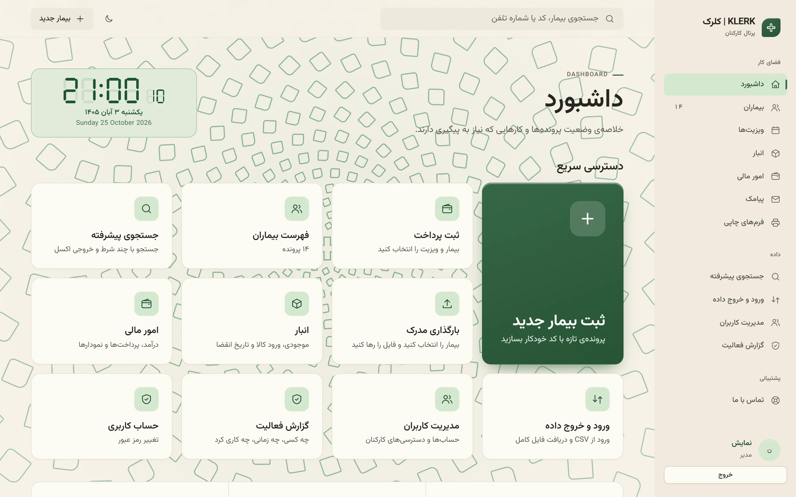
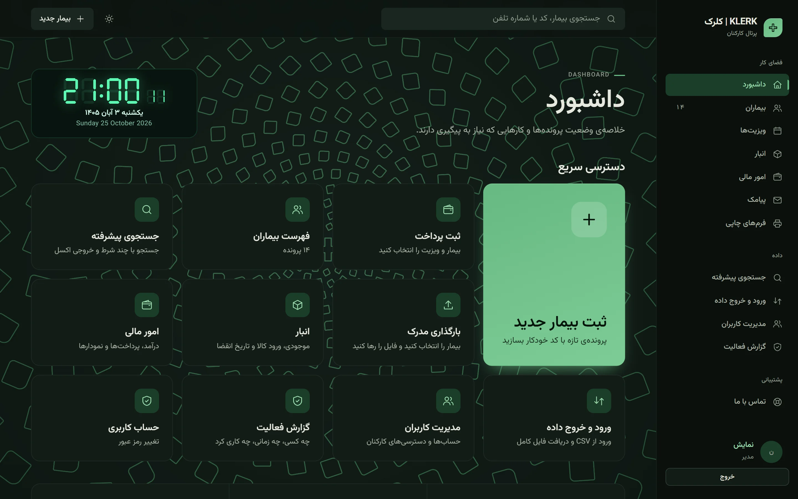
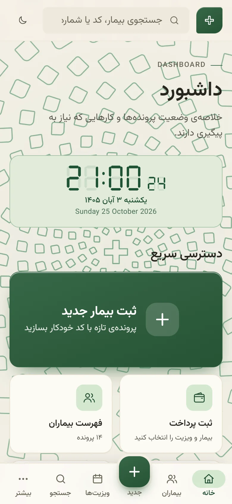
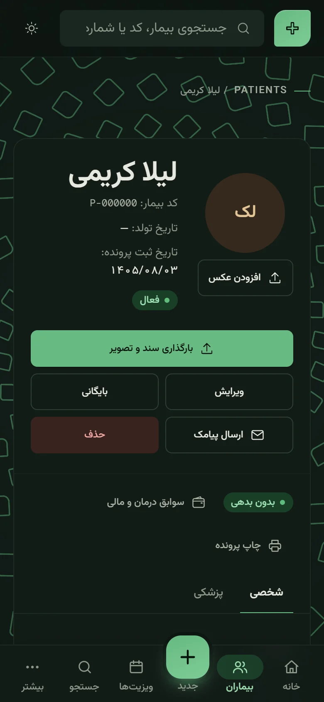
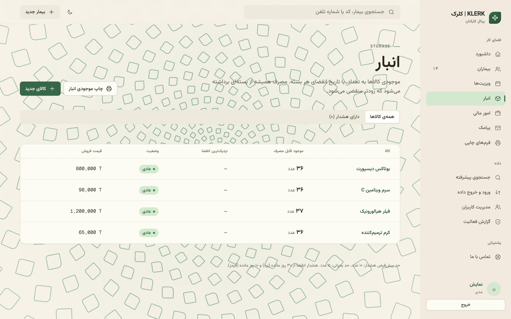
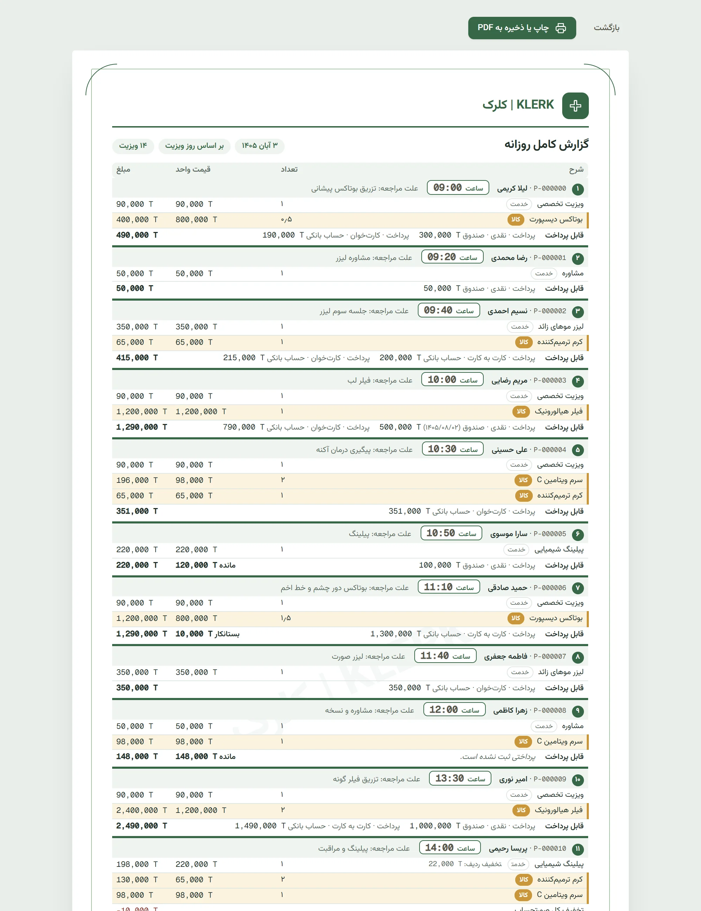
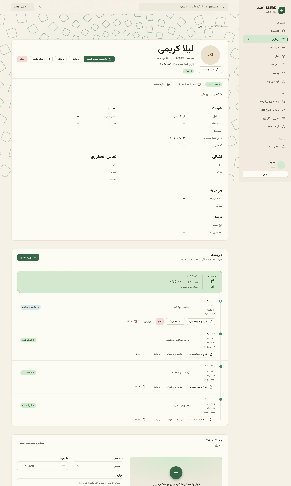

KLERK | کلرکصورتحساب ویزیت · ۳ آبان ۱۴۰۵
لیلا کریمی P-000000
| شرح | تعداد | مبلغ |
|---|---|---|
| ویزیت تخصصی | ۱ | 90,000 T |
| بوتاکس دیسپورت کالا | ۰٫۵ | 400,000 T |
| تخفیف کل صورتحساب | 0 T | |
| قابل پرداخت | 490,000 T | |
A4 · چاپ یا ذخیره به PDF از مرورگر
پروندهی بیماران، ویزیتها، صورتحساب، انبار و پیامک یادآوری؛ همه فارسی، با تاریخ شمسی، روی سرور خصوصی کلینیک خودتان.
درخواست نمایش
تماسسهشنبه ۴ آبان ۱۴۰۵
تاریخ و ساعت این کارت را رایانهی خود شما گفته است.
رزرو شد
در جریان
تسویه شد

لیلا کریمی P-000000
| شرح | تعداد | مبلغ |
|---|---|---|
| ویزیت تخصصی | ۱ | 90,000 T |
| بوتاکس دیسپورت کالا | ۰٫۵ | 400,000 T |
| تخفیف کل صورتحساب | 0 T | |
| قابل پرداخت | 490,000 T | |
A4 · چاپ یا ذخیره به PDF از مرورگر
همان نام روی برگهی مرورگر، صفحهی ورود کارکنان و سربرگ همهی فرمهای چاپی میآید.
مبلغها همیشه به ریالِ کامل ذخیره میشوند و کلینیک انتخاب میکند همهجا به چه واحدی دیده شوند. هنگام نوشتن، رقمها خودشان سهتاسهتا جدا میشوند.
نیم ویال بوتاکس یا یکونیم سرنگ فیلر: مبلغ درست حساب میشود و همان مقدار از انبار کم میشود، اول از دستهای که زودتر منقضی میشود.
قیمت هر ردیف در لحظهی ثبت ثابت میماند؛ تغییر نرخنامه، صورتحسابهای قبلی را عوض نمیکند.
صورتحساب، پروندهی بیمار، فهرست ویزیتهای روز، گزارش کامل روزانه، گزارش مالی روزانه و سه گزارش انبار؛ روی A4 یا A5، یا ذخیره به PDF.
ساعت ۸ روز روی داشبورد است.
ظهر صورتحسابها خودشان جمع میشوند.
ساعت ۵ پیامکِ نوبتِ فردا میرود.
ساعت ۳ بامداد پشتیبان گرفته میشود.
داشبورد اول صبح: ساعت، تاریخ شمسی و دسترسی سریع به هر کار. هر کس حالت روشن یا تیرهی خودش را انتخاب میکند.


زیر ۹۰۰ پیکسل، منو به نوار پایین صفحه میرود و دکمهها اندازهی انگشتاند؛ پرونده، مدارک و ویزیتها هماناند.


موجودی هر کالا، نزدیکترین انقضا و هشدار کالای رو به اتمام؛ مصرف هر ویزیت خودکار از انبار کم میشود و موجودی هرگز منفی نمیشود.

هر ویزیت با علت مراجعه، خدمات و کالاها و پرداختها با روش و حساب؛ در پایان جمع هر حساب. یک روز شلوغ روی دو برگ A4.

کد پرونده، اطلاعات شخصی و پزشکی، گالری مدارک (PDF، عکس و DICOM تا ۳۰ مگابایت) و سابقهی درمان و مالی هر بیمار.

روی سرور خصوصی همان کلینیک، نه یک سرور مشترک. هر کلینیک نسخهی جدای خودش را دارد و اتصال همیشه با HTTPS است. پوشهی هر بیمار با کد پروندهاش، مثل P-000123، روی همان سرور است.
فقط با نام کاربری و رمز دستکم ۱۰ حرفی. بعد از ۵ تلاش ناموفق، ورود ۱۵ دقیقه قفل میشود و نشست بعد از ۳۰ دقیقه بیکاری بسته میشود. ساخت، ویرایش، حذف، بارگذاری، دانلود و ورود، همه در گزارش فعالیت ثبت میشوند.
برای هر کاربر جدا تعیین میکنید: بیماران، مدارک، ویزیتها، انبار و امور مالی هرکدام «بدون دسترسی»، «مشاهده» یا «ویرایش». کارهای حساس مثل حذف بیمار یا خروجی کامل، اجازهی جدا دارند. دو الگوی آماده هم هست: «مدیر» و «کارمند».
بله، در مرورگر و بدون نصب برنامه. در صفحههای کوچک منو به پایین صفحه میرود و همهی دکمهها برای لمس بزرگاند.
با حساب ایرانپیامکِ خود کلینیک. متن یادآوری را خودتان مینویسید و klerk یک روز پیش از نوبت، سر ساعتی که تعیین کردهاید، برای بیمار میفرستد. تا کلید پنل را وارد و روشنش نکنید، هیچ پیامکی نمیرود.
همهچیز فارسی و راستبهچپ است و تاریخها شمسی نمایش داده میشوند. تاریخ و عدد را با رقم فارسی یا انگلیسی بنویسید؛ هر دو پذیرفته میشود.
هر شب ساعت ۳ یک نسخهی پشتیبان از پایگاه داده گرفته میشود و مدیر هر وقت بخواهد یک فایل zip کامل از همهی پروندهها و مدارک دانلود میکند. نصب و بهروزرسانی با راهنمای قدمبهقدم انجام میشود.
بله. فهرست بیماران را از فایل CSV وارد کنید؛ کد پروندهی قبلی هر بیمار هم میتواند همان بماند.
نام کلینیک و شمارهتان را بنویسید.
با زدن دکمه، ایمیلی با همین متن برای حسین هویسی آماده میشود تا بفرستید.